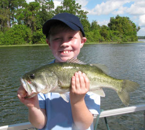

We have several boats available for fishing trips that can be rented by the hour, half day, or full day. You may choose to go out to sea several miles for deep-sea fishing, or fish in one of several bays not far from the resort. Call the front desk to schedule your trip and let them know the fishing gear you will need us to provide. Bring your catch back and our chefs will be happy to prepare it to your specifications for dinner!
Be sure to apply sunscreen liberally before you arrive at the dock. A large hat with a tie is highly recommended to protect your head and neck while you are on the open water. We will provide a cooler with bottles of water, but you will need to provide your own snacks or lunch. The Sand Crab Cafe will be happy to prepare these for you if you call several hours in advance.